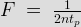

Application of OR gate
Wherever the occurrence of any one or more than one event is needed to be detected or some actions are to be taken after their occurrence, in all those cases OR gates can be used. It can be explained with an example. Suppose in an industrial plant if one or more than one parameter exceeds the safe value, some protective measure is needed to be done. In that case OR gate is used. We are going to show this with the help of a diagram.
Application of OR gate
The above figure is a typical schematic diagram where an OR gate is used to detect exceed of temperature or pressure and produce command signal for the system to take required actions.
Application of AND gate
There are mainly two applications of AND gate as Enable gate and Inhibit gate. Enable gate means allowance of data through a channel and Inhibit gate is just the reverse of that process i.e. disallowance of data through a channel. We are going to show an enabling operation to understand it in an easier way. Suppose in the measurement of frequency of a pulsed waveform. For measurement of frequency a gating pulse of known frequency is sent to enable the passage of the waveform whose frequency is to be measured. The diagram below shows the arrangement of the above explained operation.
Application of AND gate
Application of Ex-OR/Ex-NOR gate
These type of logic gates are used in generation of parity generation and checking units. The two diagrams below shows the even and odd parity generator circuits respectively for a four data.
Parity generation using Ex-OR/Ex-NOR gates
With the help of these gates parity check operation can be also performed. The diagrams below show even and odd parity check.
Parity check using Ex-OR and Ex-NOR gates
Figure (a) shows the parity check using Ex-OR gates and the figure (b) shows the parity check using Ex-NOR gates.
Application of NOT gate or Inverters
NOT gates are also known as inverter because they invert the output given to them and show the reverse result. Now the CMOS inverters are commonly used to build square wave oscillators which are used for generating clock signals. The advantage of using these is they consume low power and their interfacing is very easy compared to other logic gates.
Square wave oscillator by using a ring configuration
The above figure shows the most fundamental circuit made of ring configuration to generate square wave oscillator. The frequency of this type generator is given by

Where n represents the number of inverters and tp shows the propagation delay per gate.
 by
by